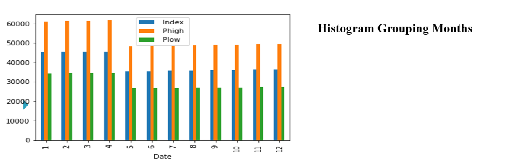
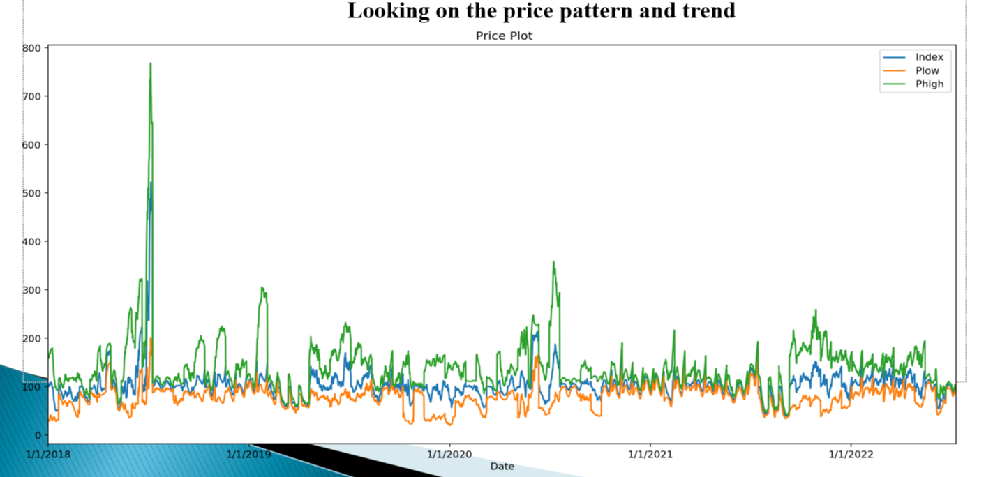
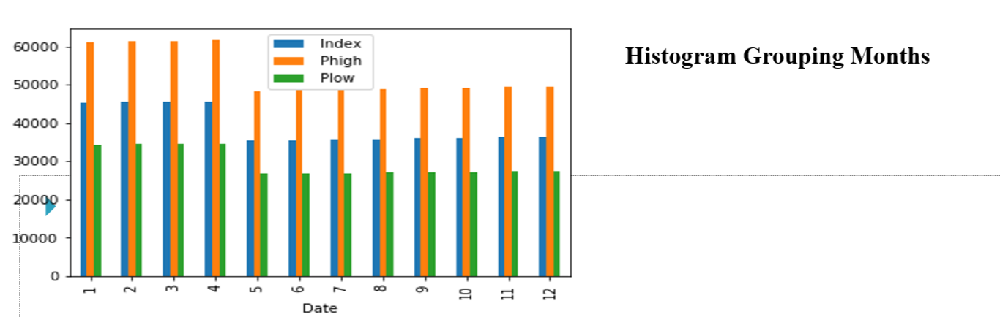
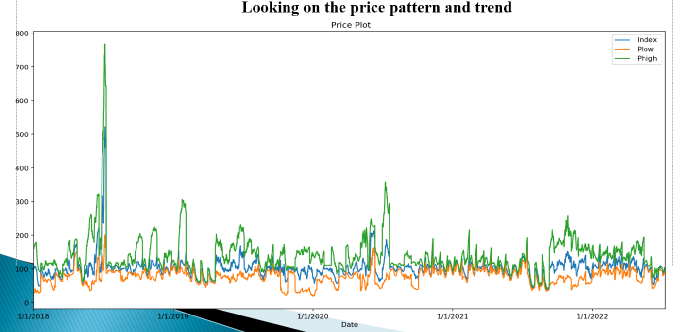

Enverus Market Price Indices Analysis Case Study
Pricing differs in various region depending upon the production and how it reaches out to the supplier chain and does produced good consumed by the buyer satisfies the responsible operations. So it has become more important than ever to streamline efforts and gain visibility into your spend in different markets. Traditional approaches cannot help in supply chain strategy because they don’t inform you on pricing trends. repo
The datasets consists of 4524 rows and 8 columns it does not have any missing values the Index category says price spend on particular operations,Sub category various operations on well cost index used in two basins,Index is the Monthly Median price of all the prices for a category in a given region, Phigh is 75th Percentile value or the highest market price value in that month, Plow is 25th Percentile value or lowest both price benchmarked to the Index Baseline,Region has two basins which is oil well regions in US,Type is whether it is normalised price for a normal operation.

Are there commonalities there?
Yes, there are commonalities since categorical and numerical variables are grouped in a way that each price index shows a high dependency rate.
Some might be based on basin locations, while others might be related to well cost components (e.g., the 100 mesh Permian index) and how they influence the price index.
Can we “group” these commonalities?
We can create many group trends and themes related to the variables in this case study. I particularly grouped ‘Index’ and ‘Phigh’ with the regions because the correlation plot showed a high relationship between both variables.
We can also group the well cost sub-category column with the index column to see how each index’s price trends look and which is better for further use.
Does that tell us something meaningful about the greater market trend?
A better understanding of how trends evolve can reveal new business opportunities and signal market changes.
This helps buyers and suppliers maximize benefits, strengthens working relationships on both sides, and enables companies to move forward in the future.
What does this “group” trend look like in the future? Why?
As we compare index pricing by regions or basins, the predictor till the year 2022 shows fair predictions alongside the original values.
So, in the future, it has a chance of performing well in the market. It also helps improve strategic pricing and reduce overspending risks.
Do these indices/time series of “groups” relate to external market indicators?
From a customer’s point of view, these insights allow them to compare their market price with Enverus market prices and see how the deviations in market trends vary.
This helps determine which one is better.
What could be good indicators for the US oil and gas industry?
From the given understanding, I would say the level of production, consumer demand, and inventory level of oil and gas products are the leading indicators.
What are other indicators? US inflation rates?
One of the most popular indicators used by oil traders is crude inventories (stock levels), which is the amount of oil currently stored for future use, and growing economic strength.
Higher inflation rates tend to lead to higher oil supplies.
Can we use any or all of these to create a narrative?
It depends on the time frame and other characteristic features of how one wants to tell the story of the dataset.
However, key points and understanding should be provided in a way that even a third-party individual reading the narrative can grasp the key insights,
understand the overall outlook, and extract meaningful takeaways.
To conclude, Enverus market price indicies provide insights both for buyers and suppliers where the buyers can see deviation from market trends, understand the economic impacts of pricing, uncover specific opportunities for additional cost savings, negotiate pricing agreements with suppliers and forecast future trends. For suppliers making the pricing analysis easy and sustainable also makes it more efficient to extract resources. This helps maximize the value generated from this analysis and also acts as a prescriptive system, driving strategies in poor performing areas.

 


